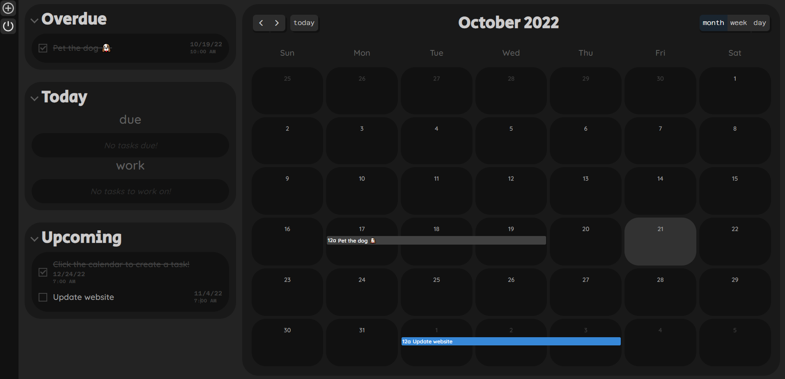
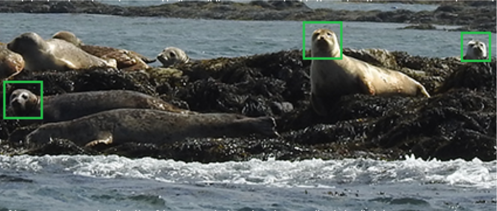
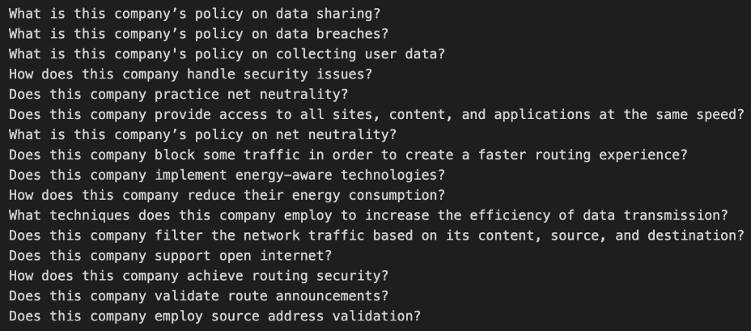

Click any project to view the code on GitHub.
BLANK Humanity
I collaborated with my co-owners to design and build a cloud-hosted social platform. We scaled to efficiently store, process, and serve 400,000+ photos and texts, generating 1,600 sales and $220,000 revenue.
I was in charge of machine learning and testing, and used unit and integration tests to ensure 99% accuracy of our machine learning model and reliable deployment as new data was added.
I managed 4-5 simultaneous projects using Agile, and communicated technical results to a community of 2,800 users.
Dev Launchers
I founded an open-source project through the non-profit Dev Launchers, building a team of over 60 cross-disciplinary contributors across 8 countries. I operated as Lead Developer, managing 100+ tasks through Git, and producing 602 commits across 3 repositories.
I built a testing and review framework to handle many contributions, achieving 100% reliability.
I mentored 19 beginner coders in algorithm design, data structures, and clean code principles, leading to 6 trainees getting their first paid job in the industry.

Quill To-Do & Calendar
I applied test-driven development and Agile to build a to-do list web app with a team of developers, creating 4 iterations based on user feedback and stories.
I wrote over 60 unit, integration, and functional tests for our model-view-controller architecture with a SQLite relational database backend, achieving 100% code coverage and reliable updates with CI/CD.
I managed our kanban board and enforced Git standards and usage, which cut meeting times in half and facilitated 384 commits.

SealNet
I created software to identify 400 seals across migration sites without the use of harmful tagging. I planned objectives and resource needs with 3 environmental researchers, then surveyed publications for approaches and built a pipeline to process 2,000+ 4k photos.
I made and optimized an AWS EC2 and S3 pipeline using C and Python, reducing data loading and training times by 75%, which led to eventual publication covered by 4 news outlets and Smithsonian.
Code-translation for Accessibility
I created an accesibility program to turn user voice commands into code interpretable by Starcraft 2, which let users control the game without motor function.
I built a speech-to-code dataset using measurable research approaches, generating over 100 datapoints. I explored and tested various models, resulting in a 112% accuracy increase over my baseline with 90% less code.

Internet Service Provider Policy Summarization
I expanded on past works in computer networks along with my team by scraping Internet Service Provider policy statements and training a Natural Language Processing model to summarize and rate companies. We assembled a dataset of 832 datapoints, helping consumers make informed buying decisions for more than 68 companies.